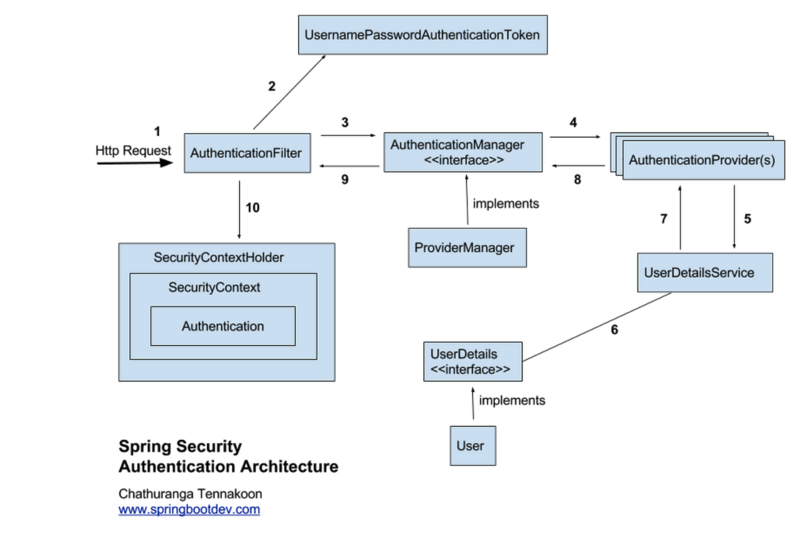
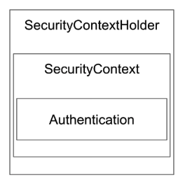

[Spring Security] Spring Security 란 ?
Spring Security 란 ?
Spring Security 란 Spring 기반의 애플리케이션 보안(인증과 권한, 인가 등) 을 담당해 관련 설정을 쉽게 할 수 있게 도와주는 스프링의 하위 프레임워크이다.
Spring Security 는 ‘인증’ 과 ‘권한’ 에 대한 부분을 “Filter“의 흐름 에 따라 처리하고 있다.
- 인증(Authentication): 해당 사용자가 본인이 맞는지를 확인하는 절차
- 인가(Authorization): 인증된 사용자가 요청한 자원에 접근 가능한지를 결정하는 절차
전체적인 동작 흐름

- 사용자가 로그인 정보와 함께 인증을 요청한다.
AuthenticationFilter가 요청을 가로챈다. 이 때 가로챈 정보를 통해UsernamePasswordAuthenticationToken객체를 생성한다. (사용자가 입력한 데이터를 기반으로 생성한 객체로, 현 상태는 미검증 상태)ProviderManager에게 토큰 객체를 전달한다.AuthenticationProvider에게 토큰 객체를 전달한다.UserDetailsService에게 사용자 정보를 넘겨준다.UserDetailsService는 실제 넘겨받은 정보를 통해 DB 로부터 사용자 인증 정보를 가져오고UserDetails객체를 생성한다.AuthenticationProvider는UserDetails객체를 넘겨받고 사용자 정보를 비교하여 인증 여부를 판단한다.- 인증이 성공적으로 완료되면, 사용자 정보를 담은
Authentication객체를 반환한다. AuthenticationFilter에Authentication객체를 반환한다.Authentication객체를SecurityContext에 저장한다.
이 과정 중 Spring Security 커스터마이징을 위해 주의깊게 살펴봐야 할 부분은 UserDetailsService 와 UserDetails 이다.
UserDetailsService 는 loadUserByUsername() 이라는 메서드를 통해 UserDetails 객체를 반환한다. 반환되는 UserDetails 를 사용자 입력 정보와 비교함으로써 실질적인 인증 여부가 결정되기 때문에, 이 두 서비스를 어떻게 구현하느냐에 따라
인증의 세부 과정이 달라지게 된다.
Spring Security 모듈
Authentication
Authentication 은 현재 접근하는 주체의 정보와 권한을 담는 인터페이스이다. Spring Security 는 사용자 정보 및 인증 성공여부를 가지고 Authentication 객체를 생성하여 SecurityContext 라는 보관소에 저장한다.
Authentication 는 다음과 같은 기능을 제공한다.
public interface Authentication extends Principal, Serializable {
// 현재 사용자의 권한 목록을 가져옴
Collection<? extends GrantedAuthority> getAuthorities();
// credentials 를 가져옴 (주로 비밀번호)
Object getCredentials();
Object getDetails();
Object getPrincipal();
// 인증 여부를 가져옴
boolean isAuthenticated();
void setAuthenticated(boolean isAuthenticated) throws IllegalArgumentException;
}
SecurityContextHolder

SecurityContextHolder 는 인증된 사용자 정보(principal)를 담고 있는 Authentication 객체의 보관소인 SecurityContext 를 관리하는 객체이다.
SecurityContextHolder 의 기본적인 SecurityContext 객체 저장 방식은 ThreadLocal 로 쓰레드 별로 객체를 저장하고 관리한다. 따라서 멀티 쓰레드 시스템을 사용할 경우 SecurityContextHolderStategy 인터페이스 구현체를 이용하여
객체 저장 전략을 변경하여야 한다.
UsernamePasswordAuthenticationToken
UsernamePasswordAuthenticationToken 토큰은 Authentication 을 구현한 AbstractAuthenticationToken 의 하위 클래스로 주로 UserId 가 Principal 역할을, Password가 Credential 역할을 담당한다.
public class UsernamePasswordAuthenticationToken extends AbstractAuthenticationToken {
// 주로 사용자의 ID에 해당함
private final Object principal;
// 주로 사용자의 PW에 해당함
private Object credentials;
// 인증 완료 전의 객체 생성
public UsernamePasswordAuthenticationToken(Object principal, Object credentials) {
super(null);
this.principal = principal;
this.credentials = credentials;
setAuthenticated(false);
}
// 인증 완료 후의 객체 생성
public UsernamePasswordAuthenticationToken(Object principal, Object credentials,
Collection<? extends GrantedAuthority> authorities) {
super(authorities);
this.principal = principal;
this.credentials = credentials;
super.setAuthenticated(true); // must use super, as we override
}
}
public abstract class AbstractAuthenticationToken implements Authentication, CredentialsContainer {
}
UsernamePasswordAuthenticationToken 클래스를 구성하고 있는 코드를 보면 두 개의 생성자를 통해 인증 여부를 담고있는 객체를 반환하고 있음을 알 수 있다.
AuthenticationProvider
AuthenticationProvider 는 실제 인증에 대한 부분을 처리한다. 인증 전의 Authentication 객체를 받아서 인증이 완료된 객체를 반환하는 역할을 한다.
AuthenticationManager
AuthenticationManager 인터페이스는 인증이 성공했을 시 사용자 정보를 담은 Authentication 객체를 반환해 SecurityContext 에 저장한다. 그리고 인증 상태를 유지하기 위해 세션에 보관하며, 인증이 실패한 경우 AuthenticationException 을 발생시킨다.
UserDetails
UserDetailService 인터페이스에 의해 UserDetails 객체가 생성되며, 이 객체는 AuthenticationProvider 에 의해 인증 과정이 실행된다.
인터페이스를 살펴 보면 아래와 같이 인증된 정보를 반환하는 메서드를 가지고 있음을 알 수 있다.
public interface UserDetails extends Serializable {
Collection<? extends GrantedAuthority> getAuthorities();
String getPassword();
String getUsername();
boolean isAccountNonExpired();
boolean isAccountNonLocked();
boolean isCredentialsNonExpired();
boolean isEnabled();
}
UserDetailsService
UserDetailsService 인터페이스는 UserDetails 객체를 반환하는 단 하나의 메서드를 가지고 있는데, 일반적으로 이를 구현한 클래스 내부에 UserRepository 를 주입받아 DB 와 연결해 인증 처리한다.
public interface UserDetailsService {
UserDetails loadUserByUsername(String var1) throws UsernameNotFoundException;
}
Password Encoding
AuthenticationManagerBuilder.userDetailsService().passwordEncoder() 를 통해 패스워드 암호화에 사용될 PasswordEncoder 구현체를 지정할 수 있다.
@Override
protected void configure(AuthenticationManagerBuilder auth) throws Exception {
// TODO Auto-generated method stub
auth.userDetailsService(userDetailsService).passwordEncoder(passwordEncoder());
}
@Bean
public PasswordEncoder passwordEncoder(){
return new BCryptPasswordEncoder();
}
GrantedAuthority
GrantedAuthority 객체는 현재 사용자(Principal) 가 가지고 있는 권한을 의미한다. ROLE_ADMIN, ROLE_USER 와 같이 ROLE_* 의 형태로 사용하며, 보통 “roles” 라고 한다.
이 객체는 UserDetailsService 에 의해 불러올 수 있고, 특정 자원에 대한 권한이 있는지를 검사하여 접근 허용 여부를 결정한다.